viewof t1_val = Inputs.range([0.1, 4.0], {value: 0.88, step: 0.05, label: "T₁ relaxation time (seconds)"})7 T1 Relaxation
Work in Progress
Suggestions of all kinds for these lecture notes are welcome — whether it’s fixing small errors, raising bigger questions, or offering new perspectives. Please share comments through GitHub Issues. To make feedback easier to address, please point to the section you have in mind — by section number or a short snippet of text.
This chapter and the next describe two of the three basic sources of MR contrast: \(T_1\) and \(T_2\) relaxation. We will describe how to measure the third, proton density (PD), later in the notes.
(For a mathematical description of the relaxation equations for both T1 and T2, as well as a short biographical note, see the resource Felix Bloch and the Bloch Equations.)
7.1 Two components of net magnetization
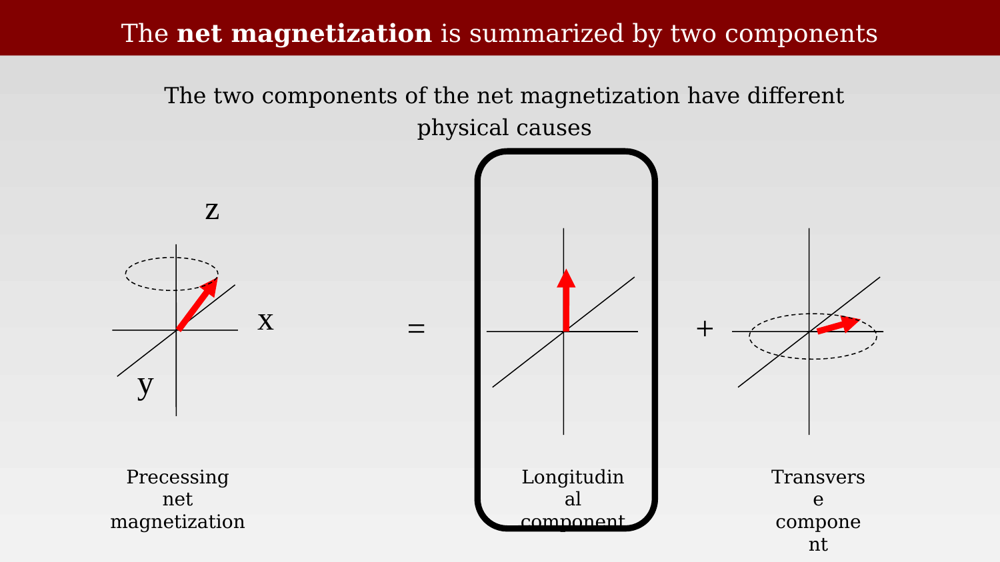
The net magnetization vector can be separated into two components: its projection onto the \(z\)-axis, which we call the longitudinal component \(M_z\), and its projection onto the \(x\)-\(y\) plane, the transverse component \(M_{xy}\).
As we saw in the previous chapter, the transverse component precesses around the \(z\)-axis and induces a voltage in the receive coil. The coil does not directly detect \(M_z\). So what determines the longitudinal component, and how can we measure it indirectly?
The two components belong to the same net magnetization, but they change for different physical reasons. This is what makes MRI versatile: one instrument can be sensitive to different properties of the tissue.
7.2 Parallel and anti-parallel states
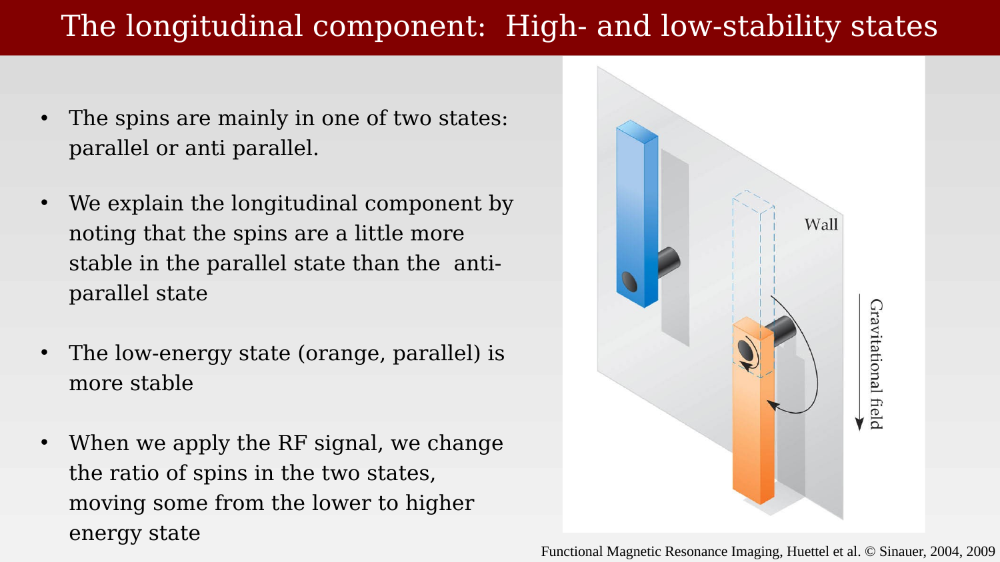
A proton’s spin component along \(B_0\) has two possible states: parallel and anti-parallel. At thermal equilibrium, slightly more protons occupy the lower-energy, parallel state. A loose metaphor to understand this difference is shown in Figure 7.2. The image shows two bars in a gravitational field, one that is hanging low and is in a low-energy state. It will stay that way unless a strong breeze comes along to move it.
The other bar is upright in a precarious state that is higher energy and less stable—even a weak breeze might cause it to fall over, dropping into the low-energy state.
The metaphor is useful, but it has limits. Protons are not tiny bars, and the net magnetization can point in intermediate directions in the vector description, especially after RF excitation. Here, “parallel” and “anti-parallel” refer specifically to the two possible outcomes for the spin component along \(B_0\).
7.3 An RF pulse changes spins between the two states
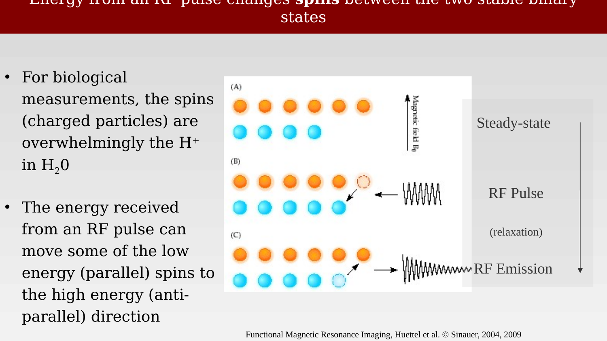
The longitudinal net magnetization is proportional to the difference between the populations of the two states. An RF pulse can alter this population difference by driving transitions between the two states. The energy required for those transitions is determined by the separation between the two energy levels.
7.4 Spin transition and quantum energy
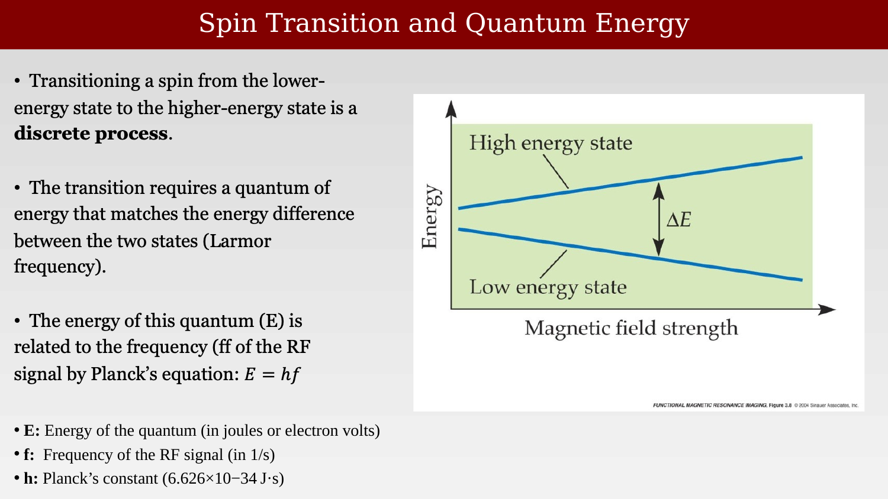
For proton spins the energy separation between the parallel and anti-parallel states increases linearly with the main field, \(B_0\). This separation is called the Zeeman splitting.
An RF field at the resonant frequency can drive transitions between the two states. In the photon picture, the energy of one RF quantum is proportional to the frequency, with Planck’s constant as the constant of proportionality.
\[ \Delta E = h f_L. \]
7.5 The frequency depends on the \(B_0\) field
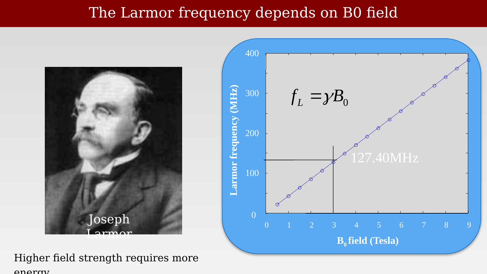
Putting these two facts together, we see that a higher \(B_0\) requires a higher resonant frequency, \(f_L\).
The relationship between magnetic-field strength and resonant frequency is linear. This frequency is called the Larmor frequency, after Joseph Larmor. It is the frequency an RF pulse must have to affect protons in a particular \(B_0\) field.
The Larmor frequency is
\[ f_L = \gamma B_0, \]
where \(\gamma\) is the gyromagnetic ratio (42.58 MHz/T for hydrogen). At 1.5 T we excite and receive near 64 MHz, at 3 T near 127 MHz, and at 7 T near 300 MHz—all in the radio band. Higher field strength means a larger energy gap between the two spin states, a larger equilibrium population difference, and—other factors being equal—generally a larger MR signal. This is one important reason for building higher-field scanners.
7.6 Spin-lattice interactions
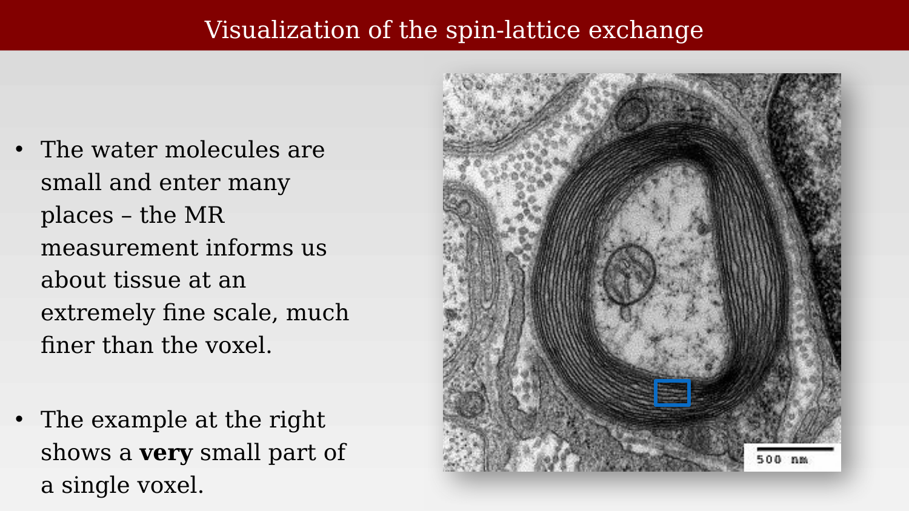
When a spin transitions from the high-energy state (anti-parallel) to the low-energy state (parallel), it gives off some energy. The energy has to go somewhere, so it is transferred to the surrounding molecular environment—the lattice. This is why \(T_1\) relaxation is also called spin-lattice relaxation.
How quickly this transfer happens depends on the local molecular environment. This is what makes \(T_1\) useful: in tissues in and around the brain, values range from a few hundred milliseconds for fat to several seconds for free water.
7.7 Hydration layer
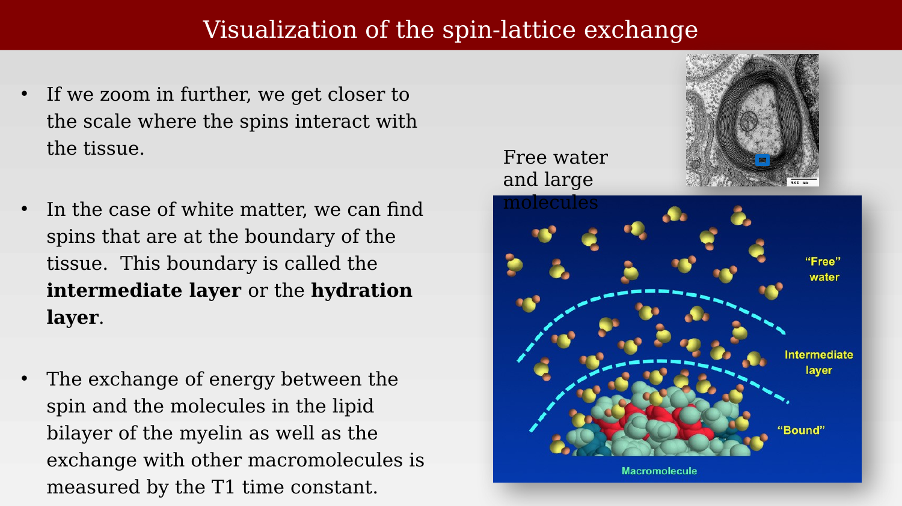
How do these molecular interactions relate to MRI measurements? The panels show a cross-section through a single axon, with individual myelin wraps visible, and then a schematic of one myelin-membrane layer: a lipid bilayer surrounded by water molecules.
The MR properties of water change when it interacts with a membrane surface. The water immediately in contact with the membrane—the apparent hydration layer—has different relaxation behavior from water farther away. A model based on quantitative \(T_1\) and proton-density mapping can estimate the apparent fraction of water interacting with membrane surfaces, which we will call the apparent hydration-layer fraction (aHLF) (Mezer et al., 2013). This is an indirect, model-based estimate; in white matter, it is expected to be higher where membrane surface area and myelin are greater.
7.8 Longitudinal net magnetization recovery (T1)
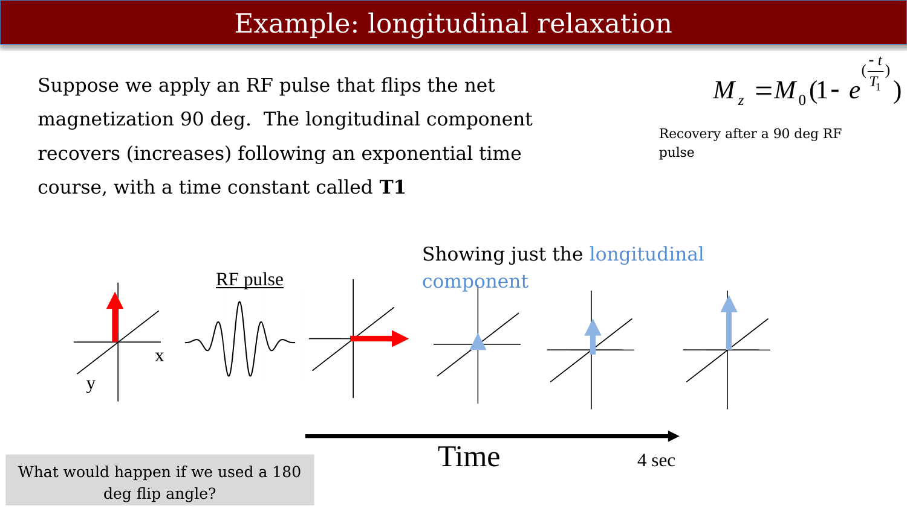
Let’s zoom out from individual spins to a beaker containing many spins. Figure 7.8 shows the net magnetization at several points. It begins at equilibrium in the \(B_0\) field. A resonant RF pulse then tips it 90 degrees away from the \(z\)-axis, so that \(M_z=0\) immediately afterward. Over time, the longitudinal component recovers toward its equilibrium value,
\[ M_z(t) = M_0\left(1 - e^{-t/T_1}\right) \]
This equation is for the 90° flip-angle case: it assumes that the longitudinal component starts at zero. The slide asks what would happen after a 180° flip angle, which starts the magnetization at \(-M_0\) instead. We take that up in the inversion recovery chapter (Figure 10.1), where the negative starting value is central to the measurement.
7.9 Longitudinal relaxation times
T1 relaxation
7.9.1 Typical \(T_1\) Relaxation Times (in seconds)
| Tissue | At 1.5 Tesla | At 3.0 Tesla |
|---|---|---|
| Gray Matter (GM) | ~0.88 s (range: 0.85 – 0.95 s) | ~1.20 s - 1.35 s |
| White Matter (WM) | ~0.65 s (range: 0.60 – 0.75 s) | ~0.83 s - 0.86 s |
| CSF | ~4.0 s | ~4.3 s |
Use the controls below to compare the longitudinal-recovery curves for gray matter, white matter, and CSF. At a fixed readout time, tissue with a shorter \(T_1\) has recovered more longitudinal magnetization. The gray- and white-matter difference is small, but it can contribute to image contrast. If the readout is too early or too late, their difference is small.
7.10 Why \(T_1\) values differ
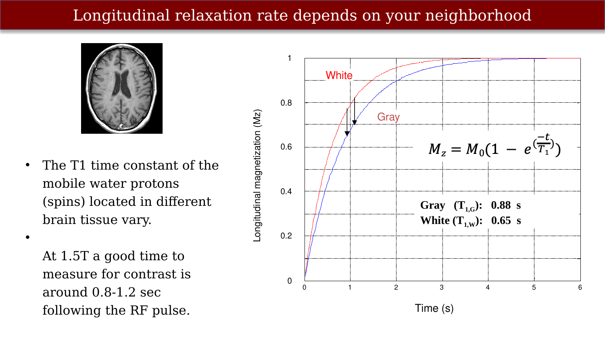
The \(T_1\) time constant depends on the molecular environment around the spins, which differs between gray matter and white matter. These differences in tissue chemistry and structure can contribute to contrast among CSF, gray matter, and white matter; the brightness in an image also depends on the pulse sequence and readout timing.
Thus, \(T_1\) is a measurable MR parameter that indirectly reflects the local molecular environment rather than directly measuring a particular tissue constituent.
7.11 Image contrast
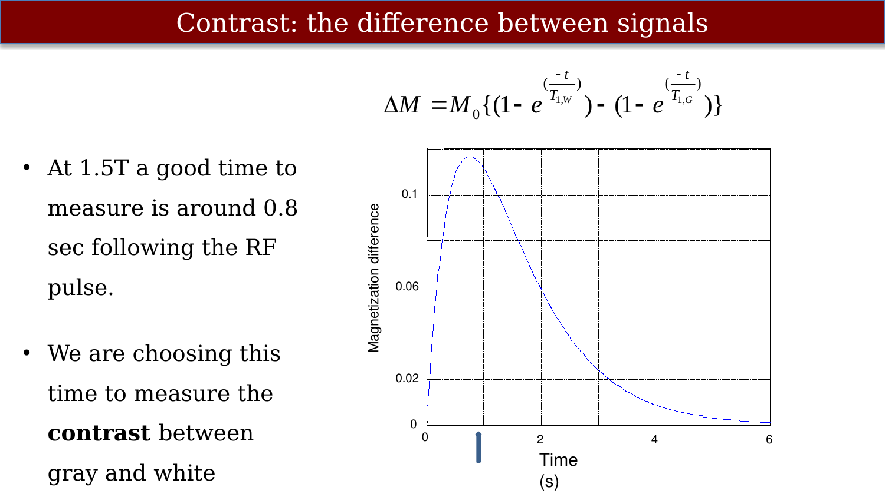
An image maps reconstructed signal values to displayed intensities. Image contrast is the difference in intensity between nearby tissues. A signal level has little meaning in isolation; spatial differences in intensity make edges and tissue boundaries visible.
7.12 Calculating the contrast
The two normalized recovery curves in Figure 7.9 start together at zero and end together at \(M_0\). In this equal-\(M_0\) simulation, the difference is therefore zero at both ends and largest somewhere in between. Figure 7.10 plots that difference,
\[ \Delta M = M_0\left(e^{-t/T_{1,G}} - e^{-t/T_{1,W}}\right) \]
Here, \(G\) and \(W\) denote gray and white matter.
The contrast for this particular simulation peaks around 0.8 s after the RF pulse at 1.5 T. This is a useful result: it tells us when to read out the signal in this simple experiment. Waiting too long is as bad as not waiting long enough, because both tissues have then nearly recovered to the same value. Choosing acquisition timing to emphasize a contrast of interest is a central design problem for a pulse sequence.
7.13 The T1-contrast: white is brighter than gray
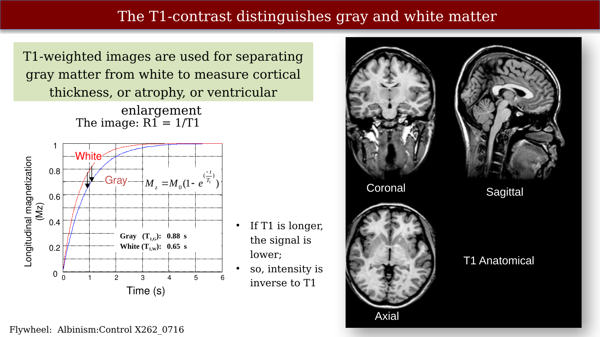
Putting the two ideas together: a longer \(T_1\) means slower recovery and therefore less longitudinal magnetization at readout, when the other factors are held fixed. In this simplified example, white matter (short \(T_1\)) is bright, gray matter is darker, and CSF (the longest \(T_1\) of the three) is darkest. Actual image brightness is sequence- and acquisition-dependent, but \(T_1\)-weighted volumes are widely used to distinguish gray matter from white matter and to support estimates of cortical thickness, atrophy, and ventricular enlargement.
7.14 Surface Interaction Rate (SIR)
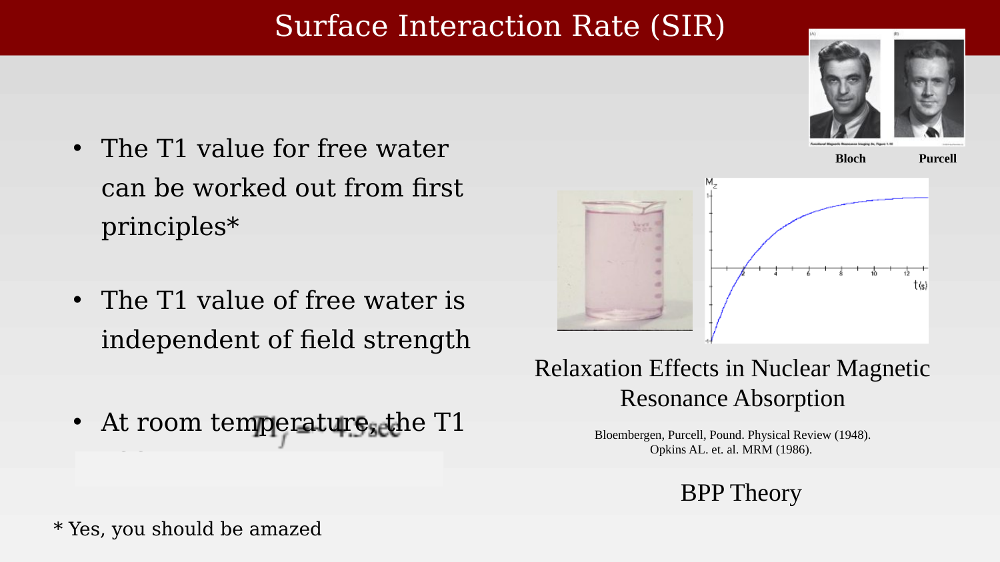
Once we recognize that \(T_1\) depends on the local molecular environment, we can cautiously relate a measurement to properties of cells and molecules in the brain. This model-based reasoning—from MR parameters to tissue properties—is an important part of quantitative MRI. We do not merely report the values; we use them to test hypotheses about the underlying biochemistry.
The \(T_1\) of free water is long because there are no nearby large molecules to absorb the excess energy efficiently. Freely moving water molecules have relatively few effective ways to pass that energy to their surroundings. Near a membrane or other macromolecule, the interaction is stronger, so the energy transfer is more efficient and \(T_1\) becomes shorter. BPP theory explains why the \(T_1\) of bulk free water is about 4.3 s at room temperature and is approximately independent of \(B_0\) over the usual MRI field range (Bloembergen et al., 1948). Yes, you should be amazed.
The \(T_1\) values for brain tissue, which contains many large molecules and membranes, are much shorter than the value for free water (0.65–0.9 s for white and gray matter at 1.5 T). Much of the water in tissue is near a macromolecular surface. Interactions between water and those large molecules can make energy transfer to the surrounding environment more efficient, shortening \(T_1\). As a rough approximation, a voxel’s \(T_1\) reflects how water interacts with its molecular environment; it does not isolate exchange in a hydration layer. For this reason, when properly accounting for other instrumental factors we can hope to measure the surface interaction rate (SIR) from the \(T_1\) measurements (Mezer et al., 2013).
Bloembergen, N., Purcell, E. M., & Pound, R. V. (1948). Relaxation effects in nuclear magnetic resonance absorption. Physical Review, 73(7), 679–712. https://doi.org/10.1103/PhysRev.73.679
Mezer, A., Yeatman, J. D., Stikov, N., Kay, K. N., Cho, N.-J., Dougherty, R. F., Perry, M. L., Parvizi, J., Hua, L. H., Butts-Pauly, K., & Wandell, B. A. (2013). Quantifying the local tissue volume and composition in individual brains with magnetic resonance imaging. Nature Medicine, 19(12), 1667–1672.